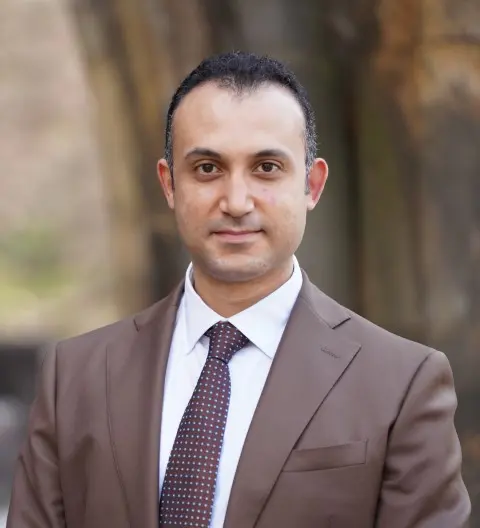
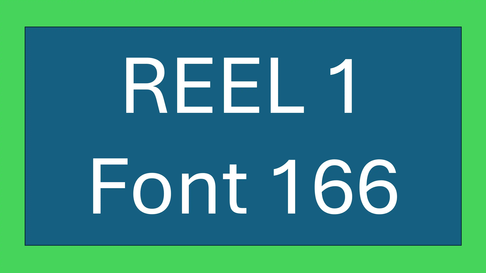
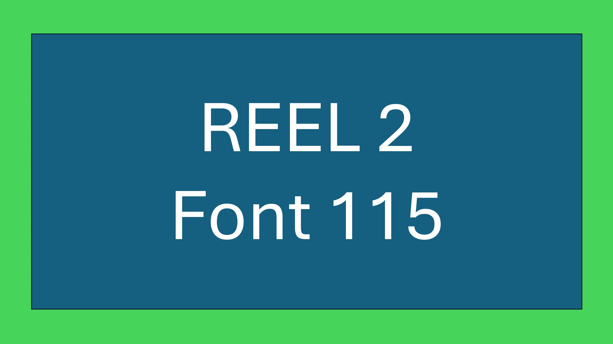
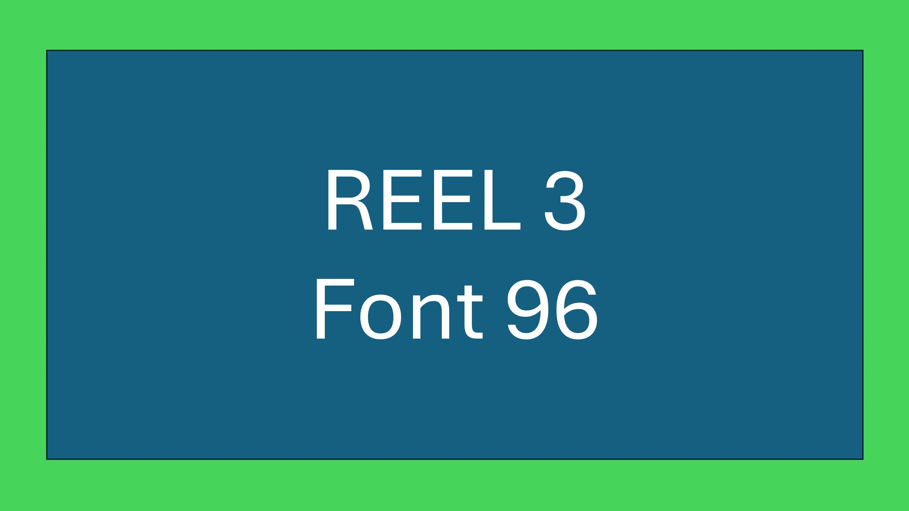

Research Portfolio

Biography
My work in healthcare research is defined by a comprehensive and integrated approach that spans the full research lifecycle, from conceptualization to post publication engagement. I approach research as a continuous and interconnected process, where each stage influences the integrity, rigor, and impact of the final outcome. My experience across study design, funding acquisition, implementation, analysis, and dissemination allows me to contribute effectively at every level while maintaining coherence and quality. Central to my work is a broad and applied understanding of research integrity, which I integrate throughout the lifecycle and across all stakeholders. I bring methodological depth through extensive experience with qualitative, quantitative, and mixed approaches, enabling me to select and combine methods in a way that aligns closely with complex healthcare questions. My research is consistently grounded in real world practice and shaped by direct engagement with diverse healthcare environments, ensuring relevance and applicability. Through sustained international and multidisciplinary collaboration, I integrate diverse perspectives into my work and contribute to research that addresses global and local challenges simultaneously. I complement this with strong expertise in biostatistics and data analysis, allowing for precise interpretation and meaningful insights. I adapt effectively to varying resource contexts, producing rigorous research even in constrained environments. My commitment to clear scientific writing and communication ensures that findings are accessible and impactful. Supported by a sustained and diverse publication record and active engagement in peer review and editorial work, I contribute not only to the production of knowledge but also to the integrity and evolution of the scientific ecosystem.
This page presents my detailed research portfolio. For a quick overview, visit the Research page; for a visual summary, see the infographic; and for the full list of publications, browse the Publications page. You may also be interested in exploring my other portfolios:
Key Metrics
Publications
Grants
Projects
Awards
My Approach
“Rigorous methods, meaningful questions, and a commitment to integrity — from the first hypothesis to the final publication.”
I Do
- Master every stage of the research lifecycle.
- Uphold integrity in design, data, and reporting.
- Choose the right methodology for each question.
- Ground research in real clinical and stakeholder needs.
- Lead international, multidisciplinary collaborations.
- Apply advanced biostatistics and data‑driven inquiry.
- Adapt creatively to resource constraints.
- Communicate findings with clarity and precision.
- Build a sustained record of high‑impact scholarship.
- Serve as a peer reviewer and editorial steward.
I Avoid
- Skipping steps in the research process.
- Compromising ethics for convenience.
- Using the same method for every question.
- Ignoring the voices of patients and clinicians.
- Working in silos without collaboration.
- Applying statistics without understanding.
- Abandoning rigour when resources are tight.
- Overcomplicating or obscuring results.
- Publishing for volume instead of value.
- Avoiding responsibility in the scientific community.
Core Strengths and Integrated Capabilities
My work is grounded in a deep and continuous engagement with the entire research lifecycle, from the earliest stage of idea conceptualization to post‑publication impact. I have developed, led, and completed research projects across all stages, including protocol development, funding acquisition, implementation, dissemination, and engagement with post‑publication dialogue. This breadth of experience has given me a precise understanding of how each stage connects to the next, and how decisions made early in the process shape methodological rigor, feasibility, and eventual impact. I am fully attuned to the expectations and roles of all stakeholders involved, including funding bodies, ethics committees, publishers, reviewers, and the wider community of readers, educators, and policy makers. This comprehensive awareness allows me to anticipate needs, align processes, and act proactively in a coordinated and efficient manner. I am able to move seamlessly between roles, contributing as a team member, advisor, or leader, depending on the needs of each project. My extensive experience in reviewing manuscripts and participating in editorial processes has further strengthened my ability to evaluate research within the broader system in which it operates. I approach research not as a sequence of isolated tasks, but as an integrated and dynamic continuum. This perspective enables me to contribute meaningfully at every stage while maintaining coherence, quality, and relevance. It also allows me to lead in a way that is grounded in practical understanding, ensuring that research is not only scientifically sound but also effectively executed and appropriately translated into meaningful outcomes.
Key Competencies
- Comprehensive Understanding: of the entire research process, from idea to impact.
- Resource‑Oriented: planning that respects real‑world constraints without sacrificing rigour.
- Impactful Insights: findings translated into actionable recommendations.
- Collaborative Leadership: bringing together multidisciplinary teams across borders.
- Ethical Integrity: unwavering commitment to transparency and reproducibility.
— Senior Research Fellow
I uphold ethical standards from study inception through peer review, ensuring transparency, reproducibility, and trust. My commitment to integrity extends across every phase of the scientific ecosystem — from the design of ethically sound protocols and the responsible conduct of data collection to the honest reporting of findings and the fair, constructive review of other scholars’ work. I believe that integrity is not a single checkpoint but a continuous thread that strengthens the credibility and societal value of research.
— Ethics Committee Chair
Quantitative, qualitative, mixed methods — I select and tailor the design to fit the question, not the other way around. I have experience with a wide range of study designs, from randomised controlled trials and cohort studies to phenomenological investigations and case study research. This methodological flexibility allows me to address research questions with the most appropriate and rigorous approach, rather than forcing every problem into a single familiar framework. I am also skilled in adapting designs to real‑world constraints, ensuring that scientific rigour is never sacrificed but pragmatically balanced with what is feasible and meaningful in each context.
— Collaborating Statistician
Every study I design starts with the people it affects — patients, families, and clinicians — ensuring relevance and impact. I actively involve stakeholders in shaping research questions, interpreting findings, and translating results into practice. This collaborative orientation ensures that my work addresses real‑world needs, generates actionable insights, and respects the perspectives of those who ultimately benefit from the research. By grounding my work in the realities of clinical practice and lived experience, I produce research that is not only academically sound but also genuinely useful.
— Patient Advocacy Lead
I lead and participate in international, cross‑disciplinary teams that bridge nursing, medicine, public health, and data science. My collaborative work spans multiple countries and healthcare systems, giving me a nuanced understanding of how research priorities, methodologies, and implementation strategies must be adapted to different cultural and regulatory contexts. I value the diversity of perspectives that multidisciplinary teams bring and actively foster an environment where each member’s expertise is respected and integrated. This global and inclusive approach enriches the quality of the research and strengthens its potential for real‑world impact.
— International Project Manager
I apply sophisticated statistical techniques to uncover patterns, test hypotheses, and guide evidence‑based decisions. My expertise includes regression modelling, survival analysis, multivariate techniques, and meta‑analysis, as well as the critical ability to choose the right method for each specific research question. I am equally comfortable working with large administrative datasets and smaller, deeply characterised clinical samples. Beyond technical execution, I focus on the meaningful interpretation of results — translating statistical output into clear, clinically relevant narratives that inform policy and practice.
— Head of Research
I deliver high‑quality research even in resource‑limited settings, adapting protocols without compromising rigour. I have designed and implemented studies in environments where funding, personnel, and infrastructure were constrained, developing innovative workarounds that maintain scientific integrity while respecting practical limitations. This adaptive mindset extends to my use of technology, sampling strategies, and data collection methods. I believe that resource constraints should stimulate creativity rather than lower standards, and I bring this philosophy to every project I undertake.
— Grant Reviewer
My manuscripts are clear, structured, and impactful — whether for high‑impact journals, grant applications, or policy briefs. I approach writing as an integral part of the research process, not an afterthought, and I invest considerable effort in crafting narratives that are both scientifically precise and accessible to diverse audiences. I have mentored numerous students and junior researchers in scientific writing, helping them develop the skills to communicate their work effectively and confidently.
— Journal Editor
My publication record spans original research, reviews, guidelines, and commentaries — consistently cited and used in practice. I have contributed to both specialised nursing journals and broader interdisciplinary outlets, ensuring that my work reaches the audiences who can most benefit from it. I am committed to producing scholarship that advances knowledge, influences policy, and improves patient outcomes, rather than simply accumulating publication counts.
— Policy Advisor
I regularly review for leading journals and contribute to editorial boards, helping maintain the quality and integrity of scientific publishing. My reviews are thorough, constructive, and timely, and I view the peer review process as a collaborative effort to strengthen the evidence base. I also mentor junior colleagues in the art of reviewing, emphasising the importance of respectful, evidence‑based critique.
— Associate Editor
Research Work
My research spans multiple care settings, populations, and methodological approaches. Select a theme below to explore detailed examples and related publications.
By Care Settings
Research conducted across different healthcare environments, each with unique challenges and opportunities.
By Target Population
Studies focusing on the needs of specific groups within the healthcare ecosystem.
Hospital Settings
My research in hospital environments examines critical care nursing, patient safety, staff‑to‑patient ratios, and the implementation of evidence‑based protocols in acute settings.
Examples:
- Research integrity throughout the research lifecycle and stakeholders: Part 1 – A broad concept broken down
- Critical care nursing outcomes in tertiary hospitals
- Evidence‑based practice implementation in acute care settings
Long‑Term Care
My work in long‑term care explores quality indicators, staffing models, dementia care, and the well‑being of residents and care staff in nursing homes and assisted living facilities.
Examples:
- Nursing home quality indicators and resident outcomes
- Dementia care pathways in long‑term care settings
- Staff retention and burnout in nursing homes
Community & Home Care
Research focused on community‑based interventions, home healthcare delivery, and supporting ageing in place with dignity and safety.
Examples:
- Home healthcare delivery for older adults
- Community‑based nursing interventions for chronic conditions
- Ageing in place: maintaining dignity and independence
Older Adults
Studies centred on gerontological nursing, frailty, polypharmacy, falls prevention, and improving the quality of life for older adults across care settings.
Examples:
- Gerontological nursing and frailty management
- Falls prevention strategies for older adults
- Polypharmacy and medication safety in geriatric care
Healthcare Professionals
Research examining workforce development, interprofessional collaboration, clinical competence, and the well‑being of healthcare staff.
Examples:
- Workforce development in nursing
- Interprofessional collaboration in healthcare teams
- Healthcare staff well‑being and burnout prevention
Students & Trainees
Studies focusing on nursing education, clinical training effectiveness, mentorship, and the development of the next generation of healthcare professionals.
Examples:
- Nursing education and clinical training effectiveness
- Mentorship programmes for nursing students
- Simulation‑based learning in nursing education
About My Research
This is a White block with headings, paragraph, lists, and buttons.
- First research priority or milestone
- Second important point
- Third achievement
- Supporting detail A
- Supporting detail B
Key Projects or Any Other Title
Use this grey block to highlight specific projects. You can include bullet lists, images, or any other elements.

Section Title
Your paragraph text goes here.
- List item one
- List item two
Research Excellence
My research focuses on gerontological nursing, long‑term care quality, and evidence‑based practice.
Publications
Peer‑reviewed articles in high‑impact journals.
Grant‑Funded Study
A multi‑site project investigating staff‑to‑resident ratios.
Students Taught
Thousands of undergraduate and postgraduate nursing students.
Award Recipient
Milestones & Impact
This dark block uses justify-content: flex-start, so text starts at the top.


Title of the first coloured block
Text placed inside the first coloured box.
Title of the second coloured block
This block sits directly below the first one.
A Section Without a Box
This text sits directly on the page background.
Project Beta
When the image is on the right, the text panel's rounded corners flip to the left side.
“This is a block quote with large ornamental quotation marks.”
Optional buttonText Highlighting
A heading with highlighted keywords.
This is normal text, and you can highlight any portion.